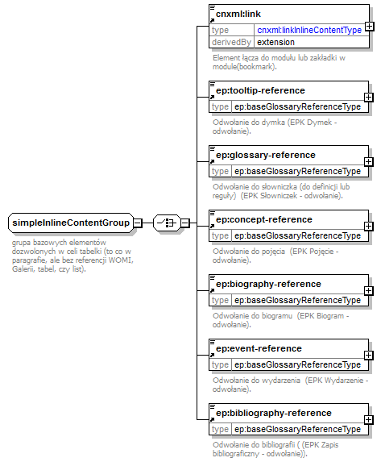

| diagram |  | ||
| namespace | http://cnx.rice.edu/cnxml | ||
| children | cnxml:link ep:tooltip-reference ep:glossary-reference ep:concept-reference ep:biography-reference ep:event-reference ep:bibliography-reference | ||
| used by |
|
||
| annotation |
|
||
| source | <xs:group name="simpleInlineContentGroup"> <xs:annotation> <xs:documentation>grupa bazowych elementów dozwolonych w celi tabelki (to co w paragrafie, ale bez referencji WOMI, Galerii, tabel, czy list).</xs:documentation> </xs:annotation> <xs:choice> <xs:element ref="cnxml:link"/> <xs:element ref="ep:tooltip-reference"/> <xs:element ref="ep:glossary-reference"/> <xs:element ref="ep:concept-reference"/> <xs:element ref="ep:biography-reference"/> <xs:element ref="ep:event-reference"/> <xs:element ref="ep:bibliography-reference"/> </xs:choice> </xs:group> |